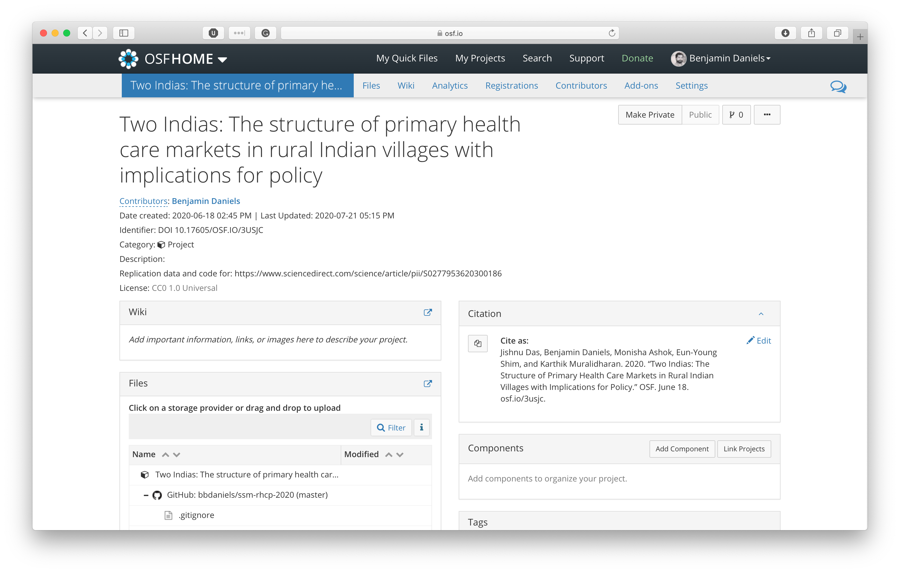
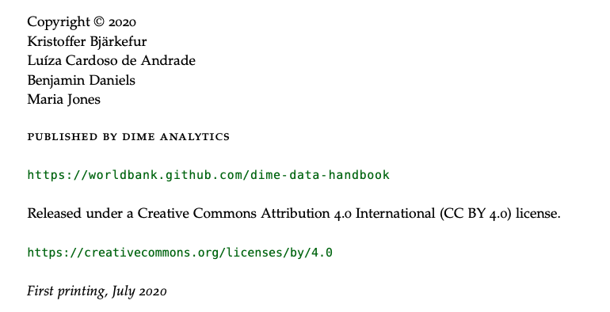
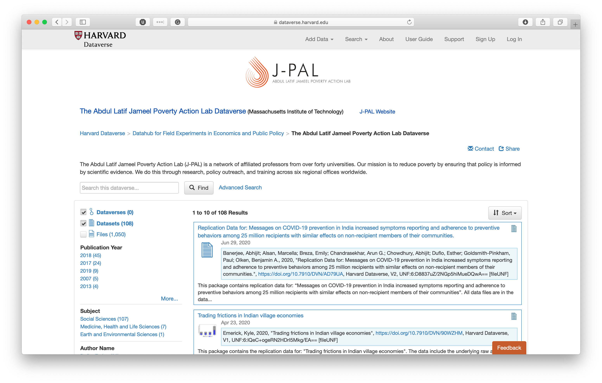
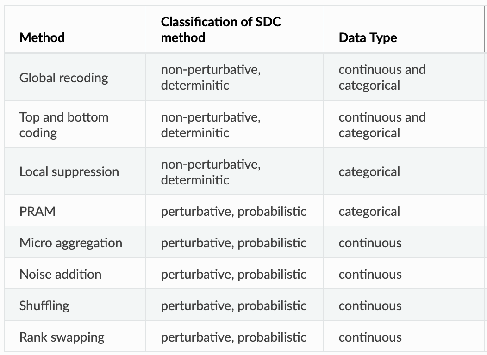
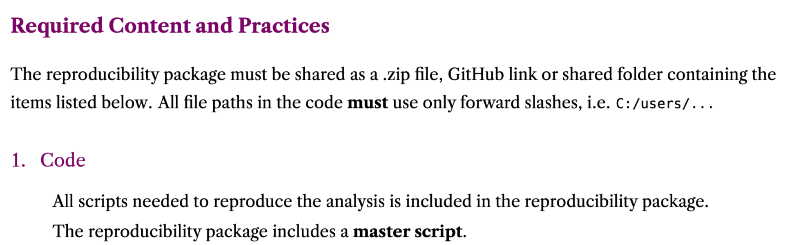
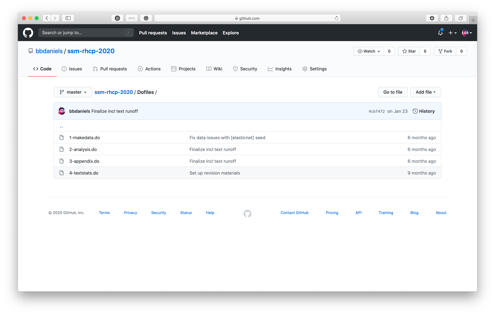
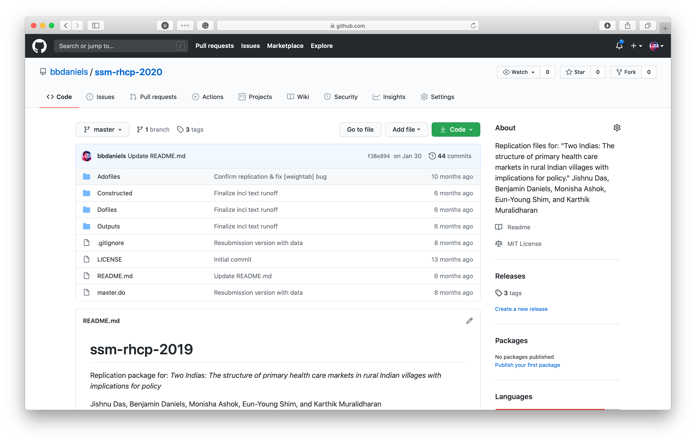

class: center, middle # Reproducibility Packages for Publication: ## Creating a Modern Reproducibility Package --- # Outline #### Why a reproducibility "package"? #### Releasing text documents #### Publishing raw data #### Releasing constructed datasets #### Organizing code for reproducibility #### A reproducibility package (_[Adapted from myself and some other very bright people...](https://worldbank.github.io/dime-data-handbook/)_) --- class: center, middle # Introduction --- ## üë®ü誂Äçüè´ Who am I? My name is Benjamin Daniels. I have worked in large-scale field research on a number of projects over the last ~9 years. This includes classic surveys, novel measurement methods (standardized patients), impact evaluation, MLE-type program support, etc. I am currently a Research Fellow here at _gui<sup>2</sup>de_ at Georgetown. I moved here in September 2019 from the World Bank, where I sat in the research department (DEC), sharing time between DECHD and DIME. **My work:** - Homepage: https://www.benjaminbdaniels.com - Google Scholar: http://bit.ly/bbdaniels-scholar - GitHub: https://github.com/bbdaniels - _Development Research in Practice_ (Book): https://worldbank.github.com/dime-data-handbook/ - MSIE Training Material: https://osf.io/h4d8y/ - RePEc: https://ideas.repec.org/f/pda505.html --- ## Why a reproducibility "package"? A reproducibility package is a bundle of outputs that give someone else all the resources they need to completely reproduce your work, _and_ the legal resources needed to understand how they can use them. This usually includes the following three components, as well as a central hub to link them all together: 1. Manuscript or other research output - Copyrighted or published - Citable 1. Raw data and documentation - Licensed - Published - Citable 1. Analysis code and constructed data - Licensed - Citable --- ## Let's start at the top: OSF The Open Science Framework (OSF) is the resource I use to centralize all resources associated with a project. See some recently published work at https://osf.io/3usjc/.  --- ## Let's start at the top: OSF OSF provides four key features for documenting and storing project components: 1. **Archival status:** _you_ cannot delete your project or its history 1. **Digital Object Identifier (DOI):** a permanent hyperlink that will never break 1. **Licensing:** Options for common licenses over work stored on OSF 1. **Citation:** Simple citation for all supplementary materials Usually, very little is _stored_ on OSF directly. But these archival and legal features make it a useful "hub" for all the materials that you will create and release, which often end up scattered across different services. I find it convenient to put things here that have no other home. Often this includes things like links to project registrations (like [clinicaltrials.gov](https://www.clinicaltrials.gov) or [the AEA RCT Registry](https://www.socialscienceregistry.org)). Other common items to put here are the project description, IRB forms, and other materials that can be publicly released with low risk. I _don't_ put data or code directly on OSF, because it's not very convenient. As they live somewhere else, we will link to them directly. As you can see, we also link to any working paper or published paper. If you don't have publication plans yet, your manuscript can also live on OSF, where it will have a dedicated link. --- ## Releasing text documents When you publish or release a document, you should ensure you know the rights associated with release. Many publishers assume these rights, and some funders require you to aquire permissive rights. (**Note:** _Always_ release a PDF.) In most cases, copyrights are automatically assigned. Copyrights don't do very much in practice, though, if you are not trying to sell your work. Instead you must _license_ your work, which is nothing more than affixing a notice to others of how you allow your work to be re-used. **Unlicensed work cannot be used at all!**  --- ## Publishing raw data When you collect data, you will want to publish a "canonical" dataset that includes all variables as collected along with the instrument and sampling and survey documentation so these are permanently available and citable. Just as with a text output, you must archive and license the data. Unfortunately there is not a single accepted hub for this. The main issue is [Statistical Disclosure Control](https://sdcpractice.readthedocs.io/en/latest/SDC_intro.html), the risk that individuals in your data will be identified. Occasionally, funders, publishers, and institutions offer these services. See the World Bank [licenses](https://datacatalog.worldbank.org/public-licenses) and [microdata catalog](https://datacatalog.worldbank.org), and the J-PAL [guide](https://www.povertyactionlab.org/sites/default/files/J-PAL-guide-to-publishing-research-data.pdf) and [data hub](https://www.povertyactionlab.org/blog/9-11-19/new-hub-data-randomized-evaluations).  --- ## Releasing constructed data "Constructed" datasets, by contrast, are much easier to handle. These are the datasets that contain only the datapoints you used in analysis, so they are much less likely to contain identifying information. You should take basic de-identification approaches, such as those below (and basic approaches like removing names and masking local area identifiers). You can release constructed datasets on GitHub or OSF. For Stata, our team created [`iecodebook export`](https://github.com/worldbank/iefieldkit) to help with this process. <center></center> --- ## Coding for reproducibility The best place to write and store code for reproducibility is GitHub. This is because it makes it very easy for anyone to get _exactly_ the code that you used to make any output. See [DIME Standards](https://github.com/worldbank/dime-standards/tree/master/dime-research-standards/pillar-3-research-reproducibility) and [Reproducibility Checklist](https://github.com/worldbank/dime-standards/blob/master/dime-research-standards/checklists/reproducibility-package-checklist.pdf). The best way to test your code's reproducibility is to have someone else run it! You need to include: - Master script - Analysis scripts (list by order of priority) - List of outputs - Documentation - Originally-created outputs <center></center> --- ## Coding for reproducibility #### Reproducibility - All scripts run from the master after adding the correct folder path to line(s) X - The master script is organized in a way that allows you to understand the general tasks being performed in the code - The master script tracks which scripts create and use which files - All the outputs are recreated and are exactly the same as the ones shared by the coder #### Code organization and readability - Code file names are informative and/or link directly to outputs - It is clear in the code why tasks are being executed - The code structure facilitates understanding of the tasks - Code uses white space to improve readability - There is extensive use of comments to explain the code - The code is efficient (tasks are executed in the simplest way possible, loops are used when needed rather than repeating lines, pre-defined functions are used) - Common tasks are abstracted and automated (e.g. using functions or macros) --- ## Coding for reproducibility - No variables are created in analysis scripts unless specific to a particular output - Code is modular, such that individual outputs can be run in any order - Research decisions are well documented in the code - The code implements the models described in the documentation - The functions used are apropriate for the analysis being performed - Categorical variables are used correctly - Outputs are exported in a reproducible manner, and manual formatting is limited <center></center> --- ## A reproducibility package And we are there! [https://github.com/bbdaniels/ssm-rhcp-2020](https://github.com/bbdaniels/ssm-rhcp-2020) <center></center> --- class: center, middle # Thank you!